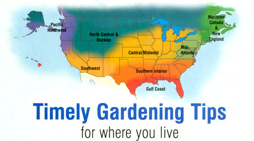

Issue # 200- October/November 2003
Illustration by Diane A. Rader
The frost is on the pumpkins, unless you were diligent enough to harvest them first. Squash and pumpkins need to cure or harden their skins for winter storage. Place them off the ground, in full sun, and cover them with a tarp at night to protect against freezing; they are cured when a thumbnail cannot pierce their skin. Now's also the time to plant garlic, clean up the garden refuse and build compost piles. And, it's time to plant some fall flower bulbs, too: A few minutes of work now will mean weeks of much-needed color in spring. Flower bulbs should be planted at a depth equal to three times the height of the bulb. If you've had trouble with skunks and pets digging up your bulbs in the past, try substituting soybean or alfalfa meal for the usual bone meal fertilizer, or covering the newly disturbed soil of the bulb plot with mulch and then chicken wire secured with natural rocks or, more discretely, U-shaped nails pushed into the ground with foot pressure.
Before frost hits, have your plan in place. Decide what to protect-and store everything else indoors. Apple boxes with the wavy dividers or cardboard egg cartons work well for storing green tomatoes. Inspect tomatoes every week, bringing the good ones to the kitchen and the bad ones to the chickens or pigs. Chop surplus sweet peppers, freeze on a cookie sheet and transfer to freezer bags. Dig up your cabbage heads (root and all) and put them back into the ground upside down in the holes created by their root balls. Protect carrots, beets and other root crops with fabric row covers. They will grow sweeter every day until the last one (which children have been known to fight over) is pulled. Move small lettuces and greens directly into cold frames and put fabric row covers over the larger ones. Roll up your hoses, take down your tomato cages and prepare for the start of next year's growing season.
By now, the gardeners who planned ahead in late summer will be enjoying their bounty of delicious cool-season crops, including lettuce, cabbage, broccoli and a variety of carrots. If not, then it's time to mark a reminder on the calendar for next year. It's never too early to start getting the soil ready for next year, and October and November offer ample opportunity to do so. Before any of those hard freezes hit, turn the soil over in the garden or work in some material to help break up heavy soils. Or try planting a nitrogen-producing cover crop, including clover or soybeans, to be turned into the soil in spring. There's also still time to get spring-flowering bulbs into the ground.
Be sure to plant some crocus in a prominent spot, so you can enjoy a colorful break from the winter blues.
Think onions! It's time to plant short-day varieties from seed, including '1015,' 'Grano,' 'Granex' and 'Supersweet.' In fact, plant the whole onion family-LSU multiplying shallots, garlic (soft-neck varieties), chives, Chinese chives and leeks. But wait until January to set out transplants for bulbing onions to keep them from bolting to seed in the spring. Almost every cool-season vegetable and herb you can think of should be planted now. As stonefruit (peaches, plums and nectarines) trees begin to drop leaves and show signs of dormancy, apply a copper fungicide to reduce bacterial canker infection. The copper will cause the trees to defoliate, but by late November it's time for them to go dormant anyway. Hold off on pruning until the trees are fully dormant, in December and January. And don't forget to put in a few pansies, violas, snapdragons, dianthus, larkspur and cornflowers. They are almost maintenance-free in the cool-season flower garden.
Time to put up that harvest, so you can enjoy your hard summer work throughout the long winter months. As you pick the last apples, don't be bothered by fungus blotches and flyspecks that sometimes appear on the fruit under humid weather conditions; they are only skin deep and can be easily scrubbed away in the kitchen. For a bumper crop of strawberries next year, mulch the plants with several inches of straw or well-chopped cornstalks in late fall. Mulch them after the plants have been exposed to some cold temperatures, to be sure they have hardened off properly. A winter mulch protects against damage from repeated freezing and thawing, which helps give the strawberry plants a head start in the spring. In the tomato patch, fall cleanup is especially important if your plants suffered from Septoria leaf spot or other fungal blights. Rotating tomato planting areas and keeping the tomato plants themselves well-watered and fertilized also will help increase their resistance to these diseases.
Clear skies and a full moon often foretell the first heavy frost-and a frantic moonlit harvest, too. Bringing in the last of the squash, peppers and green tomatoes are October traditions as well. Find cool spots in the house and garage to store your harvest. Squash and pumpkins prefer someplace dry, about 40 to 60 degrees. Onions and garlic appreciate dry and cold, about 33 degrees, and root crops need a humid 35 to 40 degrees (Pack them in damp sand or sawdust to add moisture.) Stockpile leaves in wire bins-they will form thick mats that make excellent weed barriers between rows. Prolong the harvest by covering your greens, or transplant them to a cold frame and then mulch the plants for a second harvest next March. Bring in a clump of chives for the windowsill, and pot up another to bring in after the Christmas holidays. Take time now to sift the compost and assemble your ingredients for late-winter seed starting. When the snow is deep, you'll be pleased with yourself.
After a freeze hits your garden, it's time to remove spent plant material and compost it. Now that the debris is gone, how about seeding a cover crop or planting garlic and shallots to protect your bare soil? If you opt for a fall garlic and shallot crop, not only will you be rewarded with savory delicacies next summer, but these members of the Allium family also do a great job of warding off harmful pests (see "Onions of Autumn," August/September 2003). Protect your cool-weather plants, such as lettuce, spinach and oriental greens, with individual cloches or with fabric row covers placed over entire beds. Both modes of protection save your plants from frost as well as boost their growth when temperatures drop. Apply compost to your soil now, too.
At high elevations, the summer vegetable gardens are now mostly at rest. Cover crops sown earlier should be peeking through the soil at this point. Don't forget to water them during any long dry spells-but be sure to bring in your hoses before a hard freeze hits. Carrots, beets, potatoes and any other root crops still in the ground can be covered with a layer of straw mulch to protect them from freezing and extend the harvests, too. Prepare for the next growing season by sharpening your tools and repairing irrigation parts. Enjoy winter squash pie by the fire with a stack of next year's seed catalogs at your side, so you can start the process of planning your next garden crops. In low-elevation desert areas, the winter vegetable growing season is now under way. Continue planting seeds or transplants of broccoli, cabbage, cauliflower, lettuce, oriental greens, spinach, peas and other favorite crops. Colder nights can promote the spread of fungal diseases in the garden, so prevent these as much as you can by watering early in the day. This allows time for the plants to dry out by nightfall. Also, if you spot an infected plant, be sure to remove it before the diseases spread elsewhere in your plot.
Our thanks to the following for their contributions to the Almanac: Roberta Bailey, Fedco Seeds, Waterville, Maine; Cricket Rakita, Southern Exposure Seed Exchange, Mineral, Virginia; Dean Lollis, Park's Seed Company, Greenwood, South Carolina; William D. Adams, Burton, Texas; Connie Dam-Byl, William Dam Seeds, Dundas, Ontario; Matt Barthel, Seed Savers Exchange, Decorah, Iowa; Bill McDorman, Seeds Trust, High Altitude Gardens, Hailey, Idaho; Josh Kirchenbaum, Territorial Seed Company, Cottage Grove, Oregon; Rose Marie Nichols McGee, Nichols Garden Nursery, Albany, Oregon; Micaela Colley, Seeds of Change, Santa Fe, New Mexico.
Mother Earth News
|
 Illustration by Diane A. Rader |
|
|